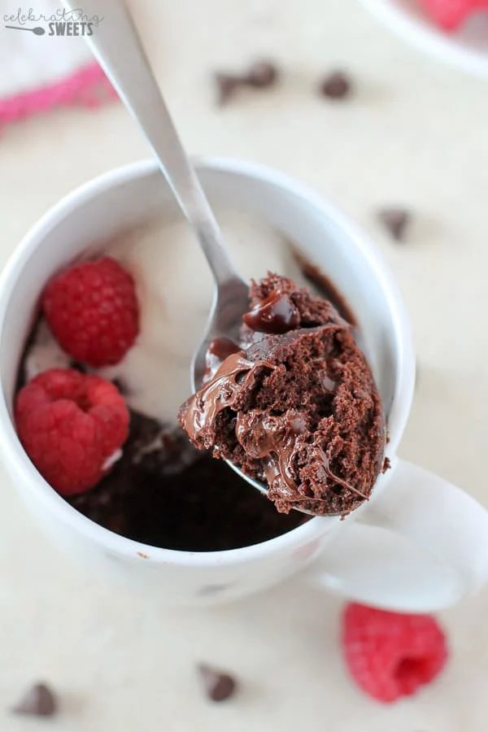

Home
Brownie in a Mug

About the Dessert
Satisfy your brownie craving in under five minutes with this fudgy and
delicious Brownie in a Mug recipe.
Ingredients
- 3 tablespoons granulated sugar
- 3 tablespoons all purpose flour
- 1 1/2 tablespoons unsweetened cocoa powder
- Pinch of salt
- 2 tablespoons chocolate chips, plus more for topping
- 1 1/2 tablespoons vegetable oil, melted coconut oil,
or melted butter
- 3 tablespoons milk
- 1/4 teaspoon vanilla extract
- Ice cream, whipped cream, powdered sugar, berries, optional
toppings
Instructions
- Place sugar, flour, cocoa powder and salt in a mug. Use a small
whisk or fork, and stir until combined, and free of lumps. Stir
in chocolate chips. Add oil, milk, and vanilla, stir with a spoon or
small rubber spatula until just combined
(try not to over mix it).
- Sprinkle a few additional chocolate chips over the top and cook
in the microwave for 60 seconds. Check to see if it is done
(no raw batter, fudgy chocolate chips are ok).
If necessary, continue cooking in 10 second increments.
Time will vary a bit based on the microwave and the size of mug.
Eat immediately with ice cream, whipped cream, powdered sugar,
or berries.